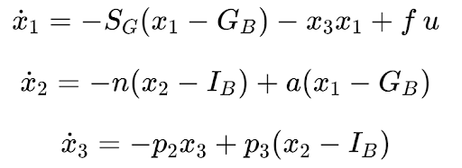
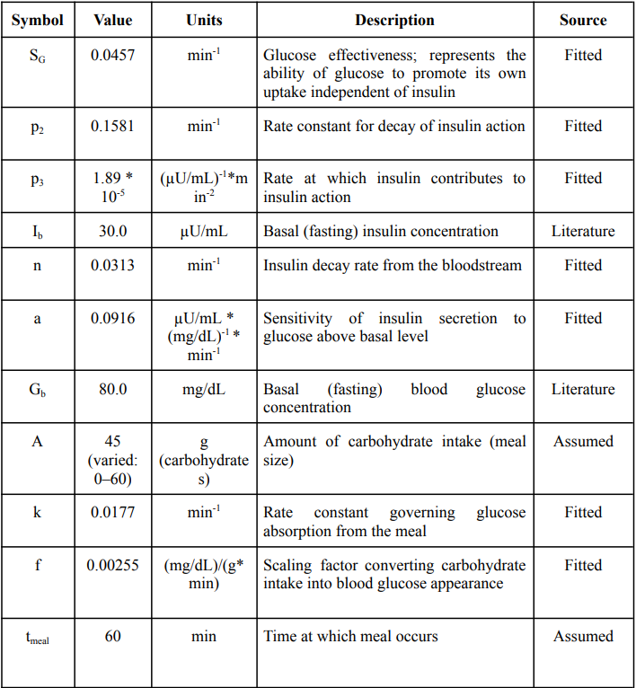
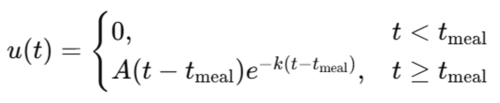

A compartmental physiological model was developed to describe the dynamic interaction between blood glucose, plasma insulin, and insulin action following a meal. The model is based on the structure of the Bergman Minimal Model, with modifications to incorporate an external carbohydrate input. Three state variables were defined: blood glucose concentration, plasma insulin concentration, and insulin action, where insulin action represents the delayed physiological effect of insulin on glucose uptake.
These states capture the dominant processes governing short-term glucose regulation and are physiologically measurable, allowing for potential experimental validation. The system is driven by an external input representing glucose appearance in the bloodstream following a meal.
The system is described by a set of coupled nonlinear differential equations, shown below. These equations define how glucose, insulin, and insulin action evolve over time through interacting physiological processes.

Figure 1: Governing equations of the glucose-insulin system.
In this formulation, basal glucose and insulin levels define the system equilibrium, while parameters represent physiological processes such as glucose effectiveness, insulin decay, and pancreatic response. Positive terms correspond to production or input, while negative terms represent clearance and regulatory feedback, ensuring consistent system behavior.
The glucose equation includes both passive regulation toward baseline and insulin-mediated uptake, while the insulin equation captures secretion in response to elevated glucose and natural decay. The insulin action state introduces a delay, representing the time required for insulin to exert its physiological effects.

Table 1: Model parameters and their physiological interpretations.
Meal intake was modeled as a delayed exponential function, where carbohydrate intake determines the magnitude of glucose input and a rate parameter controls absorption speed. This approach allows the model to simulate realistic post-meal glucose dynamics without explicitly modeling digestion or gastrointestinal processes.

Figure 2: Functional representation of glucose input following a meal.
This formulation extends the original model by incorporating dietary input as a forcing function, enabling simulation of both fasting and postprandial states.
Model parameters were estimated using experimental glucose and insulin response data extracted from published literature. Data were digitized, smoothed, and interpolated onto a common time grid. Optimization was performed using a gradient-based approach, where parameters were iteratively adjusted to minimize the error between simulated and experimental trajectories.
To ensure numerical stability and physically meaningful values, parameter transformations and normalization techniques were applied during training. This approach enabled the model to approximate physiological responses observed in experimental data.
Numerical simulations were performed using Python and integrated using a standard differential equation solver. Initial conditions were set to basal values, and simulations were run over a 300-minute time horizon. Multiple scenarios were evaluated, including fasting conditions and varying levels of carbohydrate intake, to assess system behavior under different physiological inputs.
Model outputs were compared with published glucose and insulin response curves to assess validity. Key evaluation metrics included peak values, time-to-peak responses, and overall curve shape. Baseline simulations without meal input were also used to confirm that the system remained at equilibrium in the absence of perturbations.
The system was analyzed using both analytical and computational techniques. Linearization around the equilibrium point enabled stability analysis through eigenvalue evaluation. Sensitivity analysis was conducted by varying individual parameters and observing their effect on glucose dynamics, while additional simulations were used to assess the system’s response to perturbations and identify potential oscillatory behavior.
Several simplifying assumptions were made in this model. The body was treated as a single compartment system, and insulin action was represented as a lumped variable rather than explicitly modeling receptor-level dynamics. Meal absorption was simplified, and external influences such as physical activity and hormonal regulation were not included. These assumptions improve tractability but may limit the model’s ability to capture more complex physiological behavior.